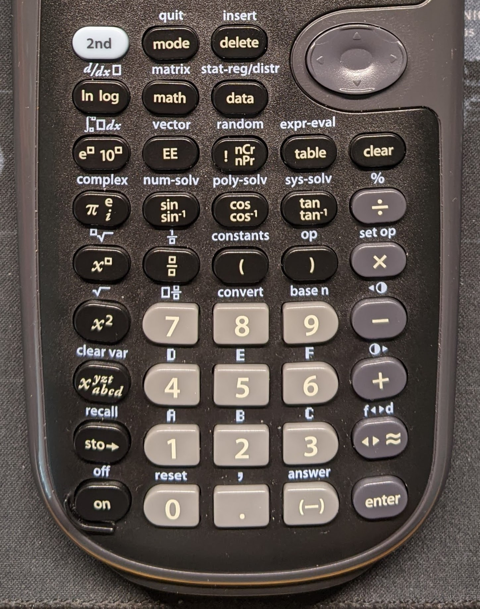

Learn more about Keyboards!

Have you ever wondered why the standard computer keyboards we use today are designed the way they are? Take another device that also comes with input keys -- "calculator" for example, all the keys on a calculator, are all straight colons and rows. Why only a computer keyboard is designed staggered?
Where is the stagger design came from?
The design of the standard keyboard can trace back around 100 years ago, from the typewriter. The typewriter is built on a pure mechanism, there were no electronic components inside it. Your fingers are the power to make a typewriter function. Each key is connected to a lever. And the lever is connected to another lever called a type hammer, which has a reverse letter (like a little stamp) in the end. There is also a layer of a spool of inked cloth called a ribbon placed right before the paper. When you hit a key, the lever behind the key will bring the type hammer to hit the paper, with the ribbon the letter will be printed on the paper, like a stamp. This is just a simple explanation of how a typewriter work, if you want to know more, check this link.

Since a typewriter has so many levers behind its keyboard, there is no way that each colon can be lined up straight. In order to include all the levers, a staggering design was the best option. As time passed on, we had new technology, our keyboards don't have the mechanical levers and type hammer anymore, but this staggering design is kept and become the "standard" of computer keyboards.
Ortholinear
If you type a lot on a standard keyboard, you might found that your fingers hurt after you type for a while. In the perspective of ergonomic, our finger moves straight up and down more easily than moving diagonally. You might wonder, no one ever thought about this problem in the past 100 years? Well, there is! One of the solutions is the "ortholinear" keyboard.
Picture from ZSA website
"Ortho" is a Greek word meaning straight or rigid. Combined with linear, means something has a lot of straight lines. The YouTuber, "Ben Vallack" gives a really good explanation on this Ortholinear and stagger design. check out the video on the left.
It seems like the ortholinear keyboard is the way to go, but it usually cost around $100~$250 to get one. One reason is that most people don't have the issue of long typing. The less need on the market, the less company is willing to develop one. If you are interested in learning more about the Ortholinear keyboard, check out my Ortholinear KB page, which I will introduce to you the ortholinear keyboard I have.
Another way to help release the pain of your finger while typing, is changing your keyboard layout, which is the cheapest way to do it. If you are interested, check out my KB layout page.